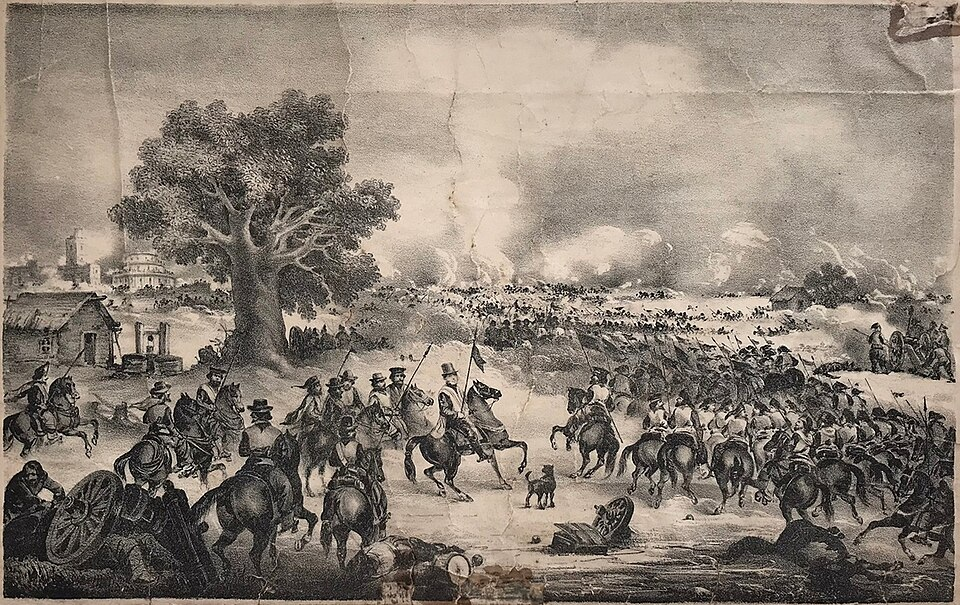

Urquiza vence a Rosas en Caseros y termina un dominio de veinte años
El Ejército Grande, formado por entrerrianos, correntinos, brasileños y orientales, deshizo en pocas horas las líneas del gobernador de Buenos Aires. Rosas, herido levemente en una mano, escribió su renuncia y se dispone a embarcar hacia Inglaterra. Veinte años de poder cupieron en una mañana.

Desde temprano esta mañana, en los campos de Caseros, cerca del pueblo de Morón, se enfrentaron dos ejércitos como no se habían visto en esta parte de América: cerca de cincuenta mil hombres entre ambos. El Ejército Grande del general Justo José de Urquiza —entrerrianos y correntinos, una división del Imperio del Brasil y fuerzas orientales— cargó sobre las líneas que el gobernador Juan Manuel de Rosas había tendido con su centro en un caserón y un palomar de ladrillo. Hacia el mediodía todo estaba decidido: la caballería del gobernador cedió primero, la infantería resistió en torno al palomar hasta ser envuelta, y el campo quedó por los aliados.
Así se cierra un ciclo abierto hace más de veinte años. Don Juan Manuel de Rosas gobernó Buenos Aires desde 1829, con un intervalo, y desde 1835 con la suma del poder público; manejó además las relaciones exteriores de todas las provincias, que le delegaron esa facultad año tras año. Sostuvo bloqueos de Francia y de Inglaterra, guerras, conspiraciones y un orden que sus partidarios llaman paz y sus enemigos, terror. Fue uno de los suyos quien lo derribó: el general Urquiza, gobernador de Entre Ríos y hasta ayer el más poderoso de sus federales, le retiró en mayo del año pasado el manejo de las relaciones exteriores y se pronunció contra su jefe.
El pronunciamiento no habría bastado sin la alianza que lo siguió: Entre Ríos y Corrientes pactaron con el Imperio del Brasil y con el gobierno de Montevideo, y la primera campaña deshizo sin batalla el sitio que el general Oribe mantenía desde hacía ocho años sobre aquella plaza. Vino luego el paso del Paraná en pleno verano, con un ejército que asombró a los prácticos por su tren de puentes, sus caballadas y su orden. Detrás de las armas marcha una exigencia que las provincias repiten desde hace años: que el país se dé de una vez la organización constitucional tantas veces prometida y otras tantas diferida.
Del vencido se sabe esto: herido levemente en una mano, se retiró del campo con pocos hombres, escribió su renuncia al gobierno de la provincia —«Creo haber llenado mi deber», dice el pliego dirigido a la Legislatura, según quienes lo vieron— y buscó asilo en casa del encargado de negocios británico, desde donde se dispone a embarcar con su hija Manuela en una nave de guerra de esa nación, rumbo a Inglaterra. Su residencia de Palermo, con sus jardines y sus naranjos, fue saqueada esta tarde por dispersos y vencedores sin que nadie pudiera impedirlo. La ciudad pasa la noche entre patrullas, rumores y puertas atrancadas.
El vencedor ha prometido que no viene a ocupar el sillón del vencido sino a organizar la nación, y ya se habla de convocar a las provincias a un acuerdo y a un congreso constituyente. Cronista prudente no adelanta juicios que pertenecen a la historia: veinte años como los que hoy terminan no se pesan en una edición. Anótese apenas lo que este día deja a la vista: que el poder más largo y más absoluto que conocieron estas tierras cayó en una mañana de verano, y que sobre su final se abre, por primera vez en una generación, la posibilidad de una constitución común. Quede para los años venideros decir si los hombres estarán a la altura de la ocasión.